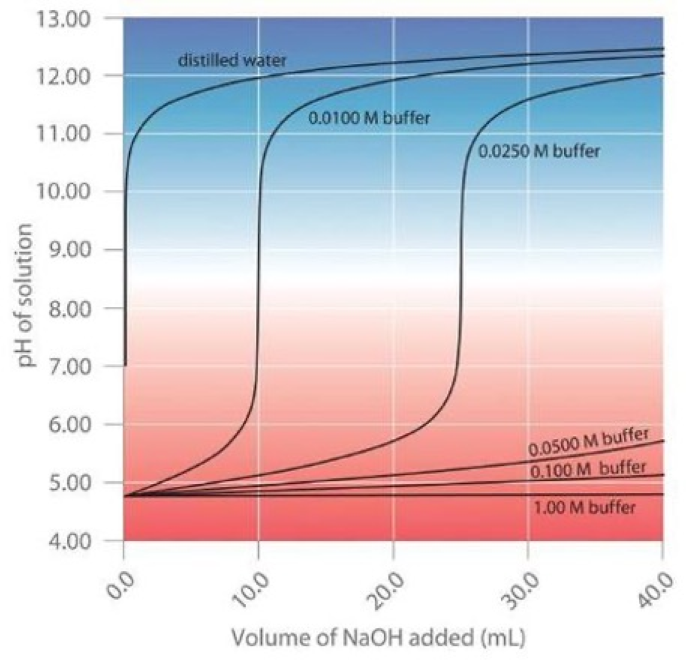
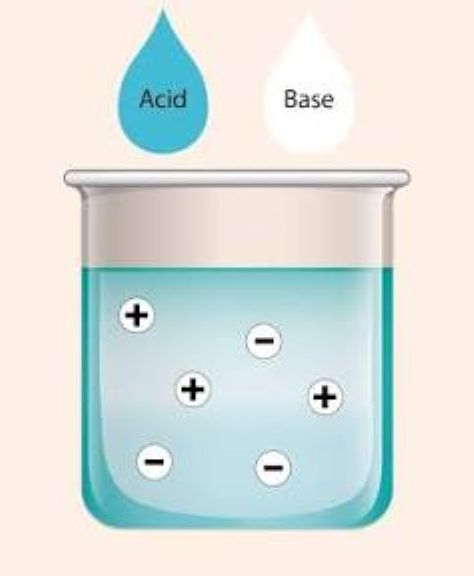
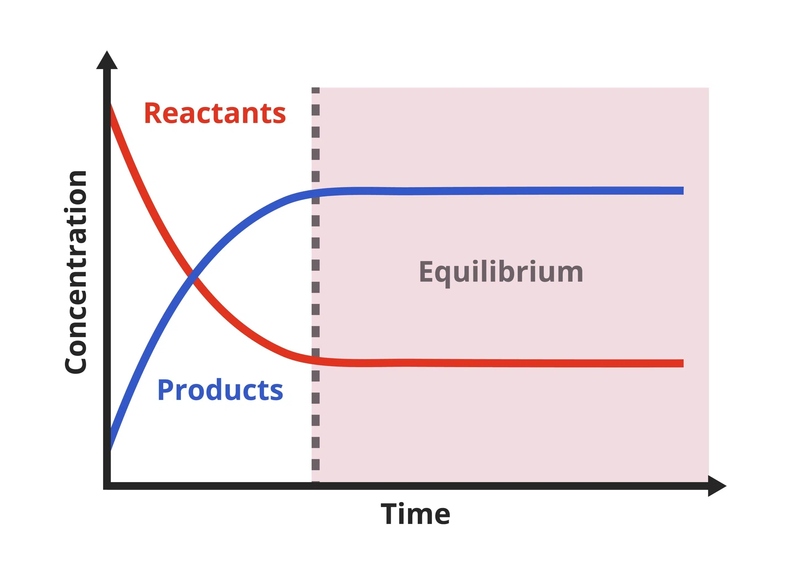
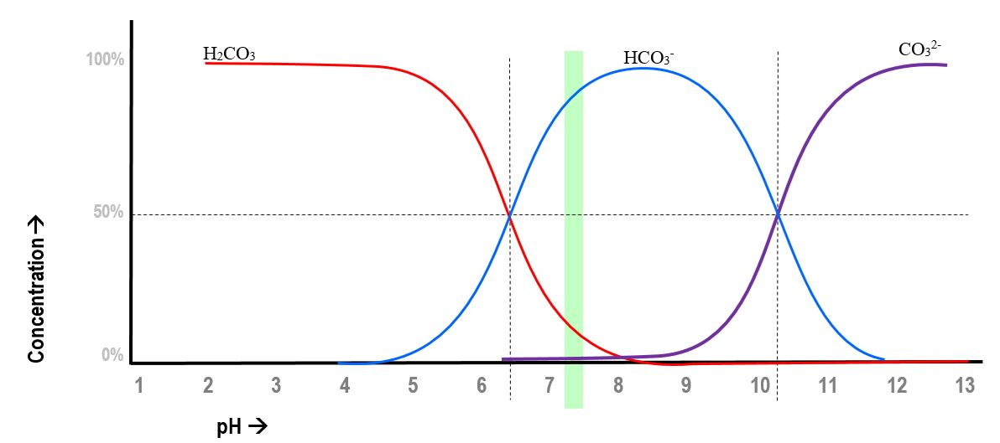
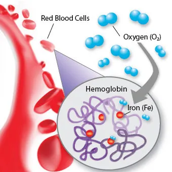
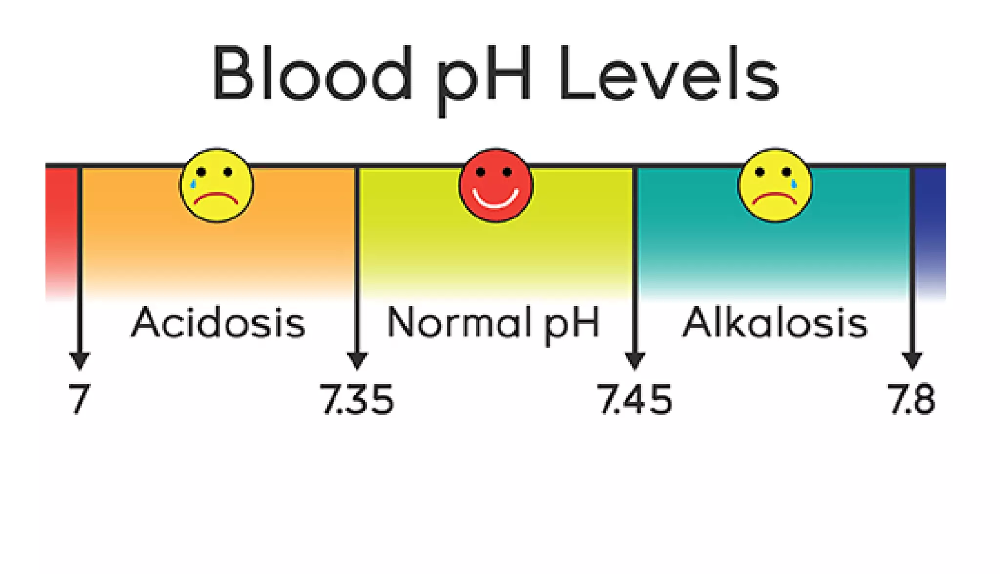
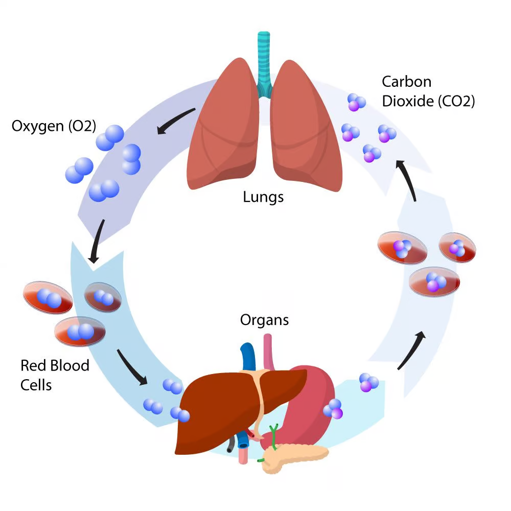

Blood pH
By Lucy Gao and Zoe Li
How does blood maintain a pH between 7.35-7.45?

01 Introduction: Understanding Blood pH
Blood pH is the measurement of how acidic or basic your blood is.
The pH scale measures the acidity of a solution from on the concentration of hydronium ions (H3O+) in a solution. It can be calculated using the formulas:
pH = -log([H3O+])
pH = 14 + log([OH-])
Your body’s blood is naturally slightly basic, with a normal pH between 7.35-7.45. It’s very important that the pH is maintained within this range because many of your body’s biological reactions and enzymes depend on specific pH conditions to function.
Even small changes in your blood pH can create health risks. If your blood reaches pH values of below 6.8 or above 7.8, it could potentially be fatal.


A buffer is an aqueous solution that resists change in pH when adding acid/base in small amounts. Buffers usually consist of a weak acid and its conjugate base, or a weak base and its conjugate acid.
In the human body, buffer systems often help prevent sudden changes in blood pH in a process called homeostasis, enabling various biological processes to occur under stable conditions.
The strength of a buffer can be measured by its buffer capacity, which is the derivative of the titration curve of the buffer. The buffer capacity is measured in moles of strong acid/base per mole of buffer per unit of pH change.

02 The Science Behind pH Regulation
The blood buffer is a prime example of pH homeostasis - that is, regulating pH to keep conditions stable.
The primary blood buffer system consists of carbonic acid (H2CO3) and bicarboniate ions (HCO3-).
These substances participate in reversible reactions, allowing the system to regulate any changes in acidity and keep a stable blood pH.
The human body carries more than 15 moles of carbon dioxide (CO2) from its tissues to its lungs each day. This carbon dioxide can dissolve in the water in blood, where it reacts to form carbonic acid (H2CO3).
Carbonic acid will react with water to form hydronium ions, so an increase in the amount of dissolved CO2 will make the blood more acidic.

The blood buffer includes the following chemical reactions:
CO2(aq) + H2O(l) ↔ H2CO3(aq)
The carbonic acid and it's conjugate base help regulate blood pH by reacting with any added acid/base.
When acid is added and enters the bloodstream, the concentration of hydronium ion (H3O+) increases, which makes pH decrease. This leads to an excess of hydronium ions, so bicarbonate ions will react with some of these excess ions to form carbonic acid and water. This is the reverse of the 2nd reaction, which can be observed above.
As a result of consuming this excess hydronium, the buffer reduces the amount by which the pH decreases.
Likewise, when a base enters the blood, hydroxide ions increase, causing pH to increase. Carbonic acid will then react with these excess ions to form bicarbonate ions and water. This is the reverse of the 3rd reaction.
By consuming some of the added hydroxide ions, the buffer reduces the amount by which the pH increases.
Together, carbonic acid and bicarbonate ions work to maintain a steady pH and minimize changes in blood pH caused by added acids or bases.

03 Chemical Equilibrium and Le Chatelier's Principle
Equilibrium occurs when there is no net change of a reaction. As such, dynamic equilibrium occurs when the rate of the forward reaction is equal to the rate of the reverse reaction. Since many chemical reactions are reversible and thus bidirectional, almost all reactions can establish equilibrium.
It is important to note that although the net change is zero, both the forward and reverse reactions are occurring simultaneously, simply at the same rate.
It is also possible for several reactions to be in equilibrium together at the same time, like in the case of the blood buffer. When this occurs, a shift in the equilibrium of one reaction can cause the other reactions to shift as well.

Recall that the three formulas are:
CO2(aq) + H2O(l) ↔ H2CO3(aq)
H2CO3 + H2O ↔ H3O+ + HCO3-
HCO3- + H2O ↔ H2CO3 + OH-

All three equations are in equilibrium at once, each impacting the others with their shifts.
Let’s say there’s an increase in the concentration of CO2, which thus causes equation 1 to shift right. This increases the concentration of H2CO3, which makes the bloodstream more acidic as it causes equation two to shift right, thus producing more hydronium ions. However, this also produces more bicarbonate ions, which then react with water to increase the concentration of carbonic acid, causing equation 1 to shift left, especially since carbonic acid is unstable in water.
Note that in the Bjerrum plot, the concentrations don’t quite reach zero, they simply dip down to very, very small concentrations. The plot itself is a representation of equilibrium concentrations as a function of pH. The pH of blood is around 7.35-7.45, which is represented with the green segment.
It is also worth noting that carbonic acid is a diprotic acid, but since the concentration of carbonate ions is extremely small in the relevant range, it can essentially be treated like a monoprotic acid when it comes to blood.
04 Beyond the Bicarbonate Buffer
The blood buffer itself is complex, including the interplay of chemical equilibrium along with different biological processes. Proteins also have amino acid residues on their surfaces, especially hemoglobin, and also play a large role in the maintenance of the blood buffer, although this contribution is difficult to quantify. Of the amino acid residues, histidines are the most important as they have a pKa that is relatively close to blood’s physiological pH of 7.35-7.45 and are present in relatively high abundance.


Every single process in your body, like enzyme shape, transporting oxygen, and cellular function relies on the normal pH range to function, so going above or below can disrupt processes and can harm vital organs. There are two main conditions for when the body develops an imbalance between the acid and base levels: acidosis and alkalosis.
Acidosis occurs when too much acid is in your system, causing blood pH to dip below 7.35. There are 2 types of acidosis: metabolic and respiratory.
Metabolic acidosis causes a loss of bicarbonate ions. For example, when you experience kidney failure, your kidneys cannot remove acid to regulate pH.
Respiratory acidosis happens when there’s an excess of carbon dioxide that your lungs can’t remove. Certain drugs can cause your breathing to slow, affecting your lungs and resulting in an excess of carbon dioxide.
Acidosis can cause hyperventilation, impaired heart function, low blood pressure, or even a coma.
Alkalosis occurs when there is not enough acid in your blood, so the pH rises above 7.45. Like acidosis, there is metabolic and respiratory alkalosis. In this case, metabolism occurs when too much bicarbonate is produced, or too much acid is lost.
Respiratory alkalosis occurs when the lungs breathe out too much carbon dioxide, causing not enough carbon dioxide in the blood.
Alkalosis can cause dizziness, confusion, nausea, muscle spasms, seizures, and more.
In everyday life, it’s crucial that our blood pH is maintained through strenuous activities. When you exercise, your muscles produce more carbon dioxide, increasing acidity. This causes the carbonic acid-bicarbonate equilibrium to shift right, producing more hydrogen ions and lowering pH. Your body responds by causing your lungs to work extra hard to release this excess carbon dioxide.
Hyperventilation occurs when you breathe rapidly, causing an excess of carbon dioxide to be lost. This loss causes the system to shift left, reducing hydrogen ion concentration and increasing blood pH. This can then lead to respiratory alkalosis.

05 Conclusion
Overall, pH homeostasis is crucial to your body’s health and well-being.
As such, the human body undergoes many complex processes to maintain blood pH. This buffer is primarily made of the bicarbonate buffer and the buffer created by amino acids. The focus throughout this page is the bicarbonate buffer, chemically simpler than the amino acid buffer and representable with three equilibrium equations. The presence of carbonic acid, a weak acid, and its conjugate base, bicarbonate, work to minimize the change of pH caused by any given shift in the bloodstream through the equilibriums all present in tandem.
Without the blood buffer, life would cease to function, as even small additions of acidic or basic substances into the bloodstream would lead to much larger pH changes and lead to acidosis, alkalosis, or in more extreme cases, death. As such, the chemical equilibrium presented by the bicarbonate buffer not only is a model example of a chemical buffer, but it is also a foundation for the many reactions and processes that occur throughout your body at all times.
06 Simulator
The following simulator is a depiction of the different molecules and reactions taking place in your bloodstream.

Note that since carbonic acid is unstable and present in relatively low concentrations, it will decompose spontaneously.
Smaller molecules move slightly faster than larger molecules, and all molecules are draggable.
As this is a simulator, the rates of reactions and the relative concentrations are not representative of reality, this is simply a depiction of how different molecules in your bloodstream react. Additionally, this does not represent all molecule types that are present in your bloodstream.
Please note: no part of this website was made with AI